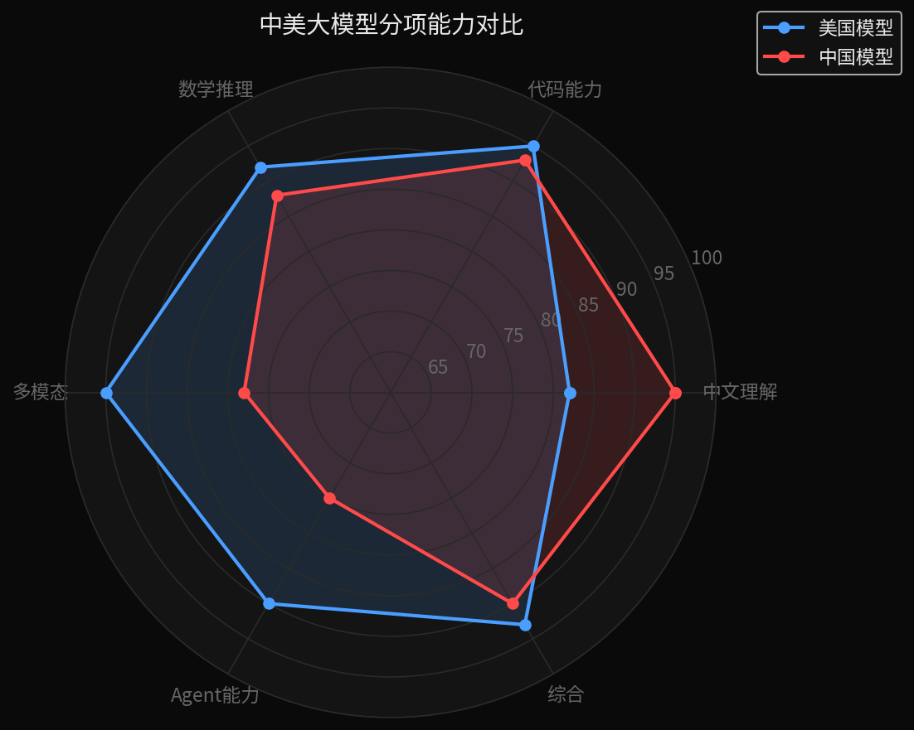
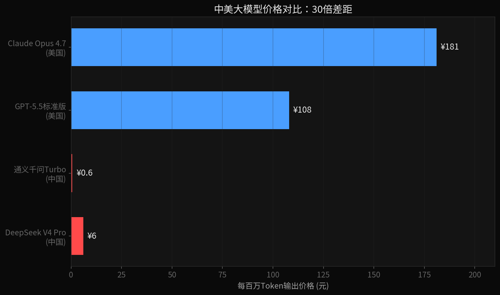
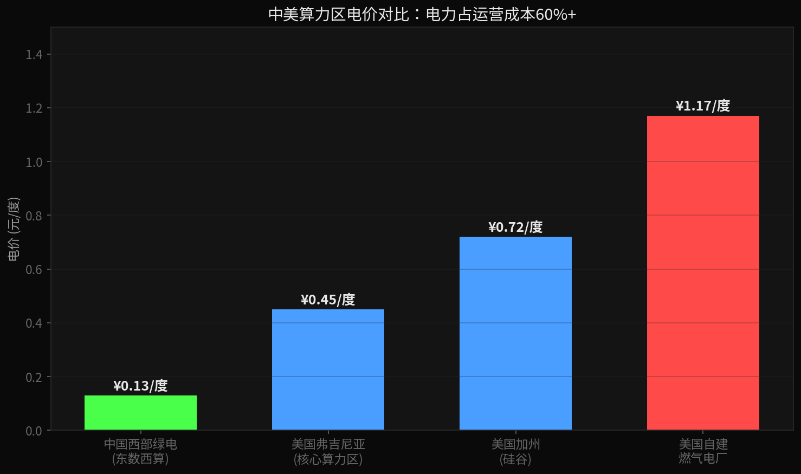
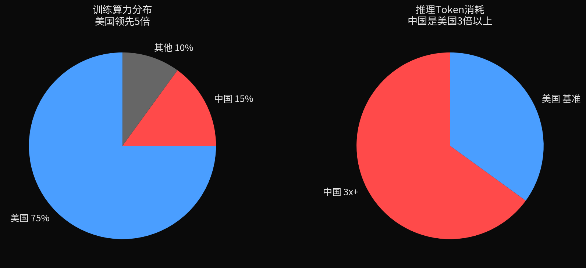
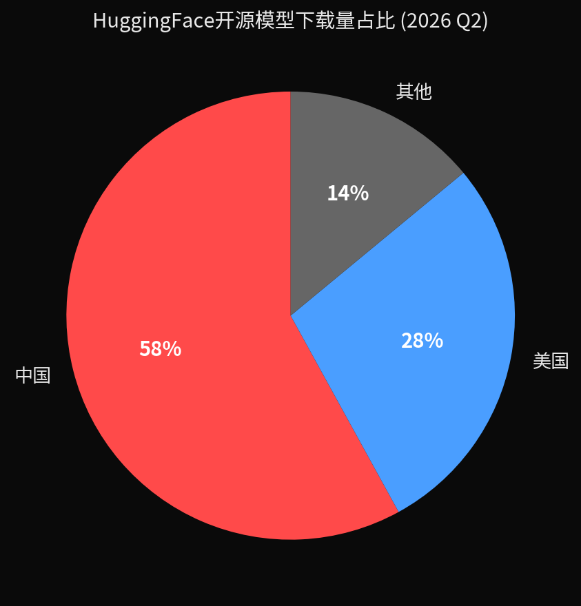

小K·AI行业数据分析 | 2026-06-28
中美AI大模型的综合性能差距已缩小到感知盲区，但价格差了30倍。AI的价格革命不是在美国硅谷发生的，是在中国。但训练侧美国还领先5倍以上，这是真正的结构性差距。
美国大模型大概领先15个月，但这个差距不是固定的，在3到15个月之间来回波动。去年三月DeepSeek R1出来的时候，差距一度追到只有3个月。现在Claude Fable 5发布，又拉开到15个月。
真人盲测数据：LMSYS竞技场，全球最权威的大模型盲测平台，真人对战投票。最新排名（2026年6月）：
| 排名 | 模型 | Elo分数 | 来源 |
|---|---|---|---|
| 1 | Claude Fable 5 | 1508 | 已下线 |
| 2 | Claude Opus 4.6思考版 | 1504 | 美国 |
| ~10 | GPT-5.5 | 1481 | 美国 |
| - | GLM-5.1 | 1475 | 中国 |
| - | DeepSeek V4 Pro | 1457 | 中国 |
GLM-5.1比Claude Opus 4.6差29分——1.9%。注意，排名第一的Claude Fable 5——6月9号发布，6月12号美国政府以出口管制为由全球下线，只活了4天。
专项能力拆解：
| 维度 | 中国表现 | 美国表现 |
|---|---|---|
| 中文理解 | 反超 | - |
| 代码能力 | 基本持平 | 基本持平 |
| 数学推理 | 开源第一 | 闭源更强 |
| 多模态 | 追赶中 | 领先 |
| Agent复杂任务 | 追赶中 | 领先 |
真实情况：简单任务差距1%，复杂任务差距5%，顶尖科研任务可能还落后一代。但90%的日常场景，都在前两类里。

三档对比：
| 对比档位 | 中国模型 | 美国模型 | 价格差 |
|---|---|---|---|
| 旗舰对旗舰 | DeepSeek V4 Pro ¥6/百万Token | Claude Opus 4.7 ¥181/百万Token | 30倍 |
| 性价比对比 | DeepSeek V4 Pro | GPT-5.5标准版 | 18倍 |
| 最极端对比 | 通义千问Turbo ¥0.6/百万Token | Claude Opus | 300倍 |
实际算账：小公司月跑1亿Token输出（约750万字），GPT-5.5标准版一个月一万多，DeepSeek V4 Pro一个月600块，差17倍。且DeepSeek 5月22号已官宣降价永久生效，不是补贴价。

美国模型走"大力出奇迹"，堆参数量。中国模型走MoE架构——混合专家模型。671B总参数，实际激活只有28B，成本天然就低。
中国推理Token消耗量，每周18.81万亿，美国5.76万亿。量上去了，边际成本就下来了。
美国核心算力区电价是中国西部绿电的3-9倍。美国电网老旧，七成设备服役超25年，硅谷新增机房电网接入要排队3-5年。中国特高压+东数西算，西部绿电0.13到0.3元一度。电力占算力运营成本六成以上，电价差3倍，推理成本自然差一截。

Altimeter Capital合伙人Fred Duan："未来只有两种模型能活下来，要么足够出色，要么非常便宜。而DeepSeek，就是那条横在所有人面前的生死线。"
训练和推理，是两场完全不同的战争。
推理侧，中国已经赢了一半：推理Token消耗量是美国的3倍以上，推理成本便宜10-30倍，中文推理能力反超，开源推理模型HuggingFace上国产下载量占全球58%。
但训练侧，美国还领先5倍以上。高端训练算力，美国占全球75%，中国占15%。训练需要最顶级的GPU、十万片级统一集群、InfiniBand高速互联、CUDA生态——中国还在补课。
斯坦福2026 AI Index：中美AI模型性能差距已经大幅缩小，但训练算力差距依然巨大。

HuggingFace 2026年Q2数据：中国开源模型下载量占全球58%，美国28%。全球开发者用的开源大模型，一半以上是中国的。
Gavin Baker："前沿模型攫取了90%的经济价值，而开源与廉价模型承载了80%的Token消耗。"
开源意味着全球开发者都在用你的模型做二次开发、做垂直应用、做私有部署。推理时代的基础设施，是中国的。数据越敏感，国产开源模型的竞争力越强——部署在自己服务器上，网线一拔，零泄露。

GPT-5 Ultra和Gemini 3 Ultra是原生统一多模态，国产大多还是"语言模型+视觉模型"并联。但差距在快速缩小，国产在中文场景反而更懂。
简单Agent任务国产已经很强，GLM-5.2智能指数全球第三。但超复杂长链条Agent任务、科研级推理，美国还领先。
政务、金融、制造、医疗——国产大模型在垂直行业的渗透深度远超美国同行。数据安全、国产化要求、成本优势三重驱动。
| 用户类型 | 建议 | 成本节省 |
|---|---|---|
| 个人/小团队/日常用 | 选国产旗舰（DeepSeek V4 Pro / Qwen 3.5 / GLM-5） | 80%-95% |
| 企业用户 | 混合用：简单走国产，复杂走GPT/Claude | 70%+ |
| 科研/超复杂推理 | 该用GPT和Claude还是得用 | - |
AI最贵的不一定是最好的。适合你的，才是对的。未来基础模型会越来越像，就像当年Intel和AMD——真正的护城河不在模型本身，而在上面的操作系统和行业应用。
数据来源：
LMSYS竞技场排名：DataLearnerAI 2026年6月16日 | 专项能力数据：SuperCLUE 2026年5月、LiveCodeBench、SWE-Bench | 模型定价：各厂商官方定价页 + 51CTO/Krasa.ai综合报道 | 推理Token消耗量：国盛证券研报 | 训练算力差距：EpochAI、斯坦福AI Index 2026 | 电力成本对比：圣途《中美算力的两条电力之路》2026-06-25 | 开源生态数据：HuggingFace 2026 Q2报告 + CSDN综合 | 引述来源：36氪《AI定价彻底分化，大模型只剩两种活法》2026-06-23 | Claude Fable 5下线事件：BriefChain、OutpostQA等多家报道 | 15个月差距波动判断、数据隐私开源推理、基础模型趋同论：李开复公开访谈观点综合整理
本内容基于公开数据整理，不构成任何投资建议。AI模型迭代快，数据截至2026年6月。
本内容由 Coze AI 生成，请遵循相关法律法规及《人工智能生成合成内容标识办法》使用与传播。